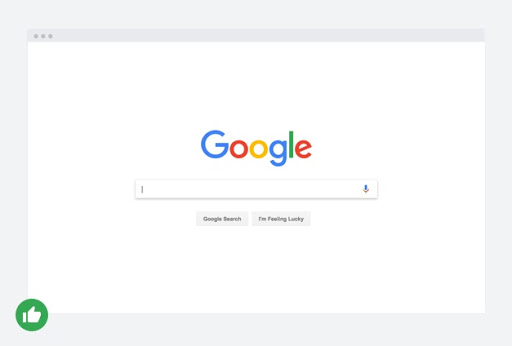
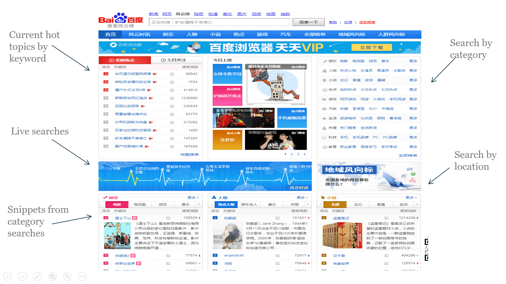

Differences In Web Designs
The first noticeable difference between the design of Chinese websites and American websites is that there are always full of links on Chinese websites, especially on the home pages of big searching engines like Google. Why Chinese webpages always pop up with so many links? Why don’t them just be simple and clean like the homepage of Google? The most remarkable reason is that compared to English, Chinese words are way too complicated. For example, when one types in “fished”, “fishing” or “fish”, they are all under the same category “fish”. That is, English is easy for stemming, but this doesn’t apply to Chinese at all. Therefore, with full pages of links under specific categories, surfers can just click the links and find information more easily and conveniently.
Compared to American websites, Chinese website is less design-oriented. This is also a huge difference. Most American webpages are delicately designed and combine texts and images with blank spaces properly. The preference for merging content with white space may lead to an increase of length of the webpage. However, Chinese web designers seem to put functionality at primacy comparatively. They do not value design and style as much as American designers do. Chinese web designers hate wasting space and usually cluster all important info together on the top of the page so that surfers can find what they need easily without too much effort. Of course, the differences can be argued in innumerable ways, and everyone’s opinion can vary tremendously. However, it is fairly interesting and surprising to see how other countries, or say, cultures differs from our owns’.
 